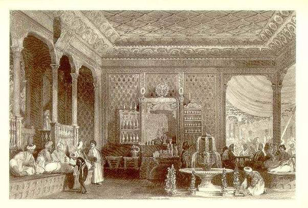

Insert coffee to begin..
First Coffee Shop

The coffee house is known by different named being: al-maqhah in Arabic, qahveh-khaneh in Persian or Kahvehane or kıraathane in Turkish, Kafano in the old state of Yugoslavia, café in French/Portuguese, cafetería in Spanish, caffè in Italian and Kaffeehaus in German. Since the 15th century, the coffee house was largely a center of social interaction and traditionally a place where men would assemble to drink coffee and entertain themselves with conversation, music, reading and playing chess
Coffee houses have been given various names at times during its long history beginning with the early Ottoman description of; ‘Schools of Wisdom’ (A meeting places of men of arts and literature), then ‘Penny Universities’ in England (They became popular forums for the learned and the not-so-learned to discuss all manner of topics including politics and current affairs and a penny was the price of a cup of coffee) 'Seminaries of Sedition’ in England (A view held by the authorities who saw them as anti-social and ordered them closed in 1675 due to The Women’s Petition Against Coffee. From 1663 the coffee house in England had to be licensed.) and ‘KaffeeKlatsch’ in Germany (The derogatory term originally coined to describe a women’s gossip session at afternoon coffee. It has since been broadened to mean relaxed conversation in general)
Following its establishment in Istanbul, this new place of social gathering found its way to Europe in the 17th century and then on to the world leading us to our present day adaptations with the likes of Starbucks. While many of the significant and historic coffee houses of the past have since disappeared, a few are still with us and continue to serve patrons today. Here is a world roundup of some of the significant ones that have survived and some that have not.
where it all begin..
Coffee belt
Sounds like a type of punishment but the coffee belt is a section of the world that has the best conditions for coffee plants. They simply love living in the middle of the globe, either side of the equator. Countries like Ethiopia, Indonesia, Brazil and Papua New Guinea (and others) all have the right temperature and perfect amount of rainfall to keep coffee plants smiling. This usually means an average temperature of 20°C, rich fertile soil and moderate amount of rain. In subtropical areas, such as Brazil and Zimbabwe, the rainy seasons and dry seasons are quite different and coffee plants are grown at high altitudes. Equatorial regions experience more rainfall resulting in continuous flowering. In these areas, there’s not as much difference between the seasons. It’s more like the highest rainfall vs the lowest rainfall that defines the coffee plant’s life cycle.
Coffee world’s biggest producers
Brazil – in 2014 this amazing country produced 2,720,520,000 kg of beans & it has comfortably held the number one position for 100 years! Vietnam – a bit of a surprise, Vietnam sold 1,650,000,000 kg of coffee in 2014 Colombia – this famous coffee-growing nations sold 750,000,000 kg in the same year Indonesia – one of our nearest neighbours, this tiny nation produced 540,000,000 kg in 2014 Ethiopia – the birthplace of coffee, in 2014, this country sold 397,500,000 kg of beans India – another surprise inclusion, India produced 344,760,000 kg of coffee in 2014 Honduras – down from the previous year, in 2014 Honduras produced 279,000,000 kg of beans Mexico – growing predominantly high end Arabica beans, Mexico sold 240,000,000 kg of this beautiful coffee in 2014 Uganda – a central part of this nation’s economy, in 2014 Uganda sold 240,000,000 kg of beans Guatemala – last but not least, this country is pretty consistent with its numbers, selling 210,000 kg of beans in 2014.